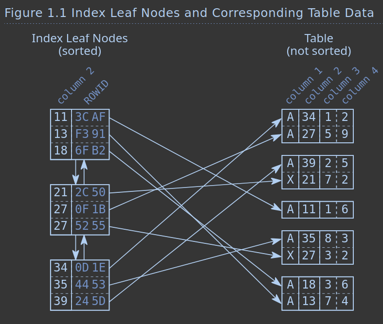
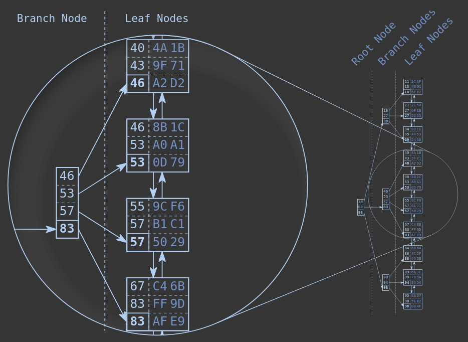

Clube do livro de programação.
abra um pr para editar essa pagina: github.com/guites/proggers.
Clube do livro de programação.
abra um pr para editar essa pagina: github.com/guites/proggers.
Livro: Designing Data-Intensive Applications
Capítulo discutido: Capítulo 3 - Storage and Retrieval
Data da reunião: 29 de abril de 2026
Este foi o material usado para guiar a reunião. O resumo se encontra em https://guites.github.io/proggers/ddia/3/notes.html.
The way we store data is highly dependant on how we expect to read that data.
Databases can be split into two main categories, based on how we read from and write to them.
OLTP (On Line Transaction Processing) are most common to web developers: speciallized on handle large volumes of request, where each request tends to focus on a small subset of data, generally specific rows.
Each row is queried by an index and them updated individually. Operations that depend on each other (where a single failure means the set of operations should be reverted) are treated atomically in a transaction.
Disk seek time (when querying data that match exact parameters) is often the bottleneck.
OLAP (On Line Analytics Processing), in contrast, tend to focus on aggregation and summarization of a large volume of rows.
Since each query might scan through large portions of a table, indexing is generally less effective.
Disk bandwidth is often the bottleneck, with data warehouses optimizing for read in detriment of write time.
On the OLTP side, there are two main ways to structure storage engines.
Log-structured is a more recent development which is gaining popularity (why?).
It is based on performing sequential writes on files and then deleting obsolete files, without ever updating past writes, which results in higher write throughput.
Updating-in-place treats the disk as a set of fixed-size pages that can be overwritten.
B-trees are a popular way to index data that allows for quickly finding and replacing stale data.
The way that information is saved to disk can also affect how we access our data, and can be adapted to best fit our model.
In most OLTP databases, storage is row-oriented: in a relational database this means that values from the same table are stored next to each other in disk.
In a document database that would mean that an entire document would be stored as a contiguous sequence of bytes.
When processing analytical data, it might be better to storage data in a column-oriented way. This would mean that for each table the values would be split by column, and values from the same column would be stored close to each other in disk.
This would make queries such as
SELECT name, residency, hobby FROM users more straight
forward.
Discuss!
Referência: https://use-the-index-luke.com/sql/preface.
Nós conversamos na última reunião sobre como a abstração do SQL vaza quando o desenvolvedor começa a pensar sobre performance.
Geralmente não pensamos em como a informação vai ser buscada no banco, e sim em qual informação queremos buscar.
SELECT date_of_birth
FROM employees
WHERE last_name = 'Garcia'Na medida em que o desenvolvedor precisa garantir requisitos de performance, ele precisa entender sobre como a informação é organizada no banco.
The abstraction reaches its limits when it comes to performance: the author of an SQL statement by definition does not care how the database executes the statement. Consequently, the author is not responsible for slow execution. However, experience proves the opposite; i.e., the author must know a little bit about the database to prevent performance problems.
A performance pode ser melhorada sem muito conhecimento de como os dados são salvos, nem de como a engine realiza as buscas (a implementação em C de um query do sqlite3, por exemplo).
O fator de maior impacto é o padrão de acesso aos dados. Conhecer como os dados são acessados é o que vai decidir, entre outras coisas, a escolha do tipo de storage (relacional vs. document oriented vs. vetorial).
Na maioria dos casos, quem possui esse conhecimento é justamente o desenvolvedor.
Referência: https://use-the-index-luke.com/sql/anatomy.
Um índice faz a consulta ficar rápida. Ele é uma estrutura distinta
da tabela onde ele age, criada com o comando create index,
que referencia a tabela.
Ele ocupa espaço no banco e possui uma cópia dos dados indexados da tabela alvo.
That means that an index is pure redundancy.
Buscar em um índice é como buscar um nome em uma lista telefonica ou palavras em um dicionário. O princípio fundamental é que elas vão estar organizadas em uma ordem conhecida.
A diferença é que o índice do banco está sempre sendo atualizado. Como os dados são ordenados, cada atualização envolve uma mudança nos dados já existentes.
O desafio da construção de índices eficientes é reduzir o impacto das escritas e atualizações redundantes quando os dados da tabela de referência são alterados.
Os bancos costumam usar duas estruturas de dado na solução desse problema: a doubly linked list e a search tree.
Reference: https://use-the-index-luke.com/sql/anatomy/the-leaf-nodes.
Os índices precisam manter uma ordem mas também permitir inserção de novos valores em qualquer lugar de forma rápida.
Os bancos usam listas duplamente encadeadas para desacoplar a ordem lógica dos elementos da sua ordem física na memória.
Cada elemento da lista é um database block (ou database page), que é o elemento de menor tamanho utilizado pelo banco, geralmente alguns kbs
Every table and index is stored as an array of pages of a fixed size (usually 8 kB, although a different page size can be selected when compiling the server).
O banco salva a maior quantidade possível de índices em cada página/bloco.
That means that the index order is maintained on two different levels: the index entries within each leaf node, and the leaf nodes among each other using a doubly linked list.

A imagem representa cada índice composto por dois valores: o valor da coluna, usado na ordenação (lado esquerdo) e o endereço da linha em memória, na direita.
Podemos imaginar que índices criados para colunas com tipos complexos são mais pesados.
A ilustração também mostra que, em bancos row oriented, todas as colunas de um mesmo row vão estar salvos de forma adjacente na memória: após encontrar um row baseado num índice, é fácil acessar suas outras colunas.
Discuss!
Se usassemos apenas a lista duplamente encadeada, mesmo sabendo que ela é ordenada, buscas ainda seriam demoradas, pois teriamos que ler os valores de um a um, partindo ou do início ou do fim da lista.
Para agilizar a busca, uma estrutura adicional é utilizada: a balanced search tree, a B-tree.

A lista encadeada estabelece a ordem entre os nós (leaf nodes), enquanto a B-tree relaciona diferente nós baseados no seu maior valor.
Essa estrutura permite realização de binary search nos dados, que possui O(log(n)).
A B-tree is a balanced tree—not a binary tree.
A estrutura é balanceada pois a profundidade (depth) da árvore é a mesma em todas as posições, além de crescer de forma logaritmica.
Discuss!
| Tree Depth | Index Entries |
|---|---|
| 3 | 64 |
| 4 | 256 |
| 5 | 1,024 |
| 6 | 4,096 |
| 7 | 16,384 |
| 8 | 65,536 |
| 9 | 262,144 |
| 10 | 1,048,576 |
Para um exemplo de quatro itens por nó, temos a quantidade acima de itens por nível de profundidade: bancos de dados podem guardar até centenas de itens por nó.
Nos exemplos anteriores assumimos que o índice é composto de dois elementos: uma chave (o valor da coluna indexada, usado na busca) e um valor (o endereço na memória da linha da tabela onde valor buscado está salvo).
Quando salvamos o endereço (ou referência), significa as linhas da tabela estão salvas em uma heap file, ou seja, sem ordem definida.
Referência (heaps): https://learn.microsoft.com/en-us/sql/relational-databases/indexes/heaps-tables-without-clustered-indexes?view=sql-server-ver17.
Esse formato é comum pois quando múltiplos índices são criados (por ex. um por coluna), a quantidade de dados duplicados é reduzido. Alterações nos valores também não precisam ser propagadas entre todos os índices.
O uso do heap file também faz sentido como forma de otimizar os writes: não precisamos alocar espaço de antemão, e a inserção de novas linhas geralmente acontece em qualquer lugar da memória que possua espaço livre.
Uma alternativa é salvar o valor inteiro da linha. Isso ajuda em situações onde precisamos otimizar ao máximo a performance dos reads (queremos evitar o lookup na memória para encontrar a linha referente ao índice).
Isso é chamado de clustered index. No MySQL, com a engine InnoDB, a chave primária é sempre um clustered index. Nesse caso, chaves secundárias podem apontar pro endereço da chave primária ao invés do endereço na heap file.
Chamamos de covering index quando apenas algumas colunas da tabela são duplicadas no índice. Assim, alguns queries são cobertos pelo índice, pois podem ser respondidos sem precisar fazer o lookup para a heapfile.
Discuss!
Follow up: como você trabalharia com queries baseados em intervalos?
SELECT * FROM restaurants WHERE latitute > 51.4946 AND latitude < 51.5079
AND longitude > -0.1162 AND longitude < -0.1004;